>> Cẩm nang chăm sóc CHÓ
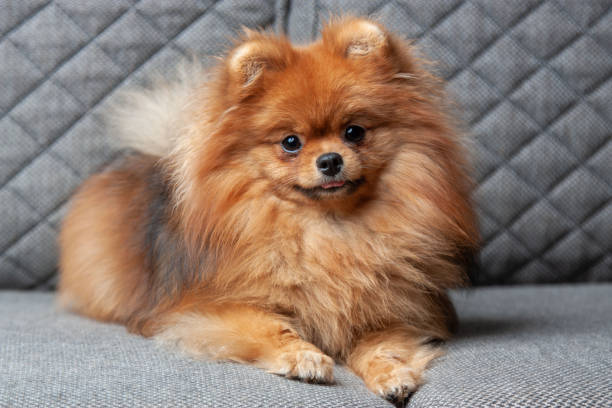

Chó Pomeranian hay còn được biết đến với cái tên Chó Phốc, là một giống chó dành cho quý
tộc. Chúng có ngoại hình nhỏ nhắn với bộ lông trắng muốt như một cục bông, đôi mắt tròn xoe, lanh lợi trông rất
hiền lành và đáng yêu.Với vẻ ngoài nhỏ nhắn, đáng yêu là thế nhưng chú chó này không hề thân thiện đâu nhé. Vì
cùng thuộc họ hàng với chó Husky, Alaska nên bản tính của những em này rất dũng mãnh và hung dữ.
Phốc Sóc cực kỳ cảnh giác với người lạ, với tiếng sủa vang trời, dai dẳng không dứt, những con chó này lại rất
được tin tưởng trong việc trong giữ nhà.
Ngoài ra, cũng giống như Husky và Alaska, loài chó này cần được dạy dỗ đúng và cần được dắt đi dạo, vận động mỗi
ngày.
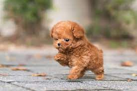
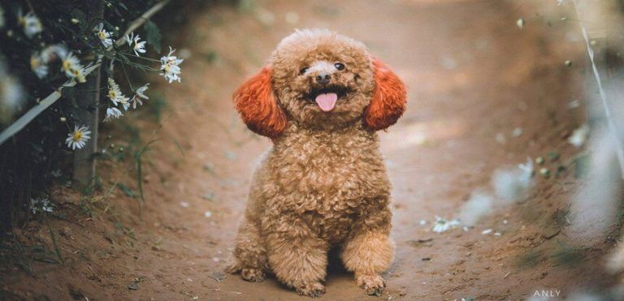
Chó Poodle hay còn được gọi với cái tên Chó săn vịt. Chúng có vẻ ngoài vô cùng dễ
thương, giống như những chú chó nhồi bông với bộ lông mềm và xoăn tít độc đáo, trông rất đáng yêu, ngộ nghĩnh.
Poodle có tính cách rất thân thiện, lanh lợi và thông minh.Chính vì sự đáng yêu này mà ngày nay, Poodle là một
trong những chú chó được yêu thích nhất. Chúng được chọn làm thú cưng trong nhà, được gia chủ nâng niu và chăm
sóc rất kỹ lưỡng..
Giống chó Poodle có nhiều loại, mỗi loại ứng với mỗi kích thước khác nhau. Tuy nhiên, chúng ta sẽ thường hay bắt
gặp 3 kích thước phổ biến như: Poodle chuẩn, Mini Poodle, Toy Poodle. Bên cạnh đó còn có thêm cả kích thước Tiny
Poodle và Chó Teacup Poodle.
Poodle có sức khỏe không được tốt và kém ổn định, vì thế đòi hỏi gia chủ phải có kiến thức nuôi dạy chó tốt và
hãy thường xuyên chăm sóc em nó kỹ lưỡng nhé.
>> Cẩm nang chăm sóc CHÓ

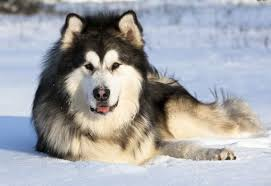
Chó Alaska là giống chó với thân hình to lớn “vạm vỡ” mang nét dũng mãnh đặc trưng của
loài chó sói hoang dã. Thân hình to lớn là thế nhưng tính tình của chú lại hiền lành, thân thiện nên được nhiều
người ưa chuộng và chọn chúng làm vật nuôi trong nhà.Chúng còn được yêu thích bởi bộ lông dày, mềm mại và trí
thông minh tuyệt vời của mình.
Vì là một giống chó Alaskan rất hiếu động, thích được đùa giỡn, vui chơi và chạy nhảy… nên chúng sẽ như một em
bé, cảm thấy khó chịu và trở nên khó dạy nếu bị nhốt ở trong nhà nhiều ngày.
Mặc dù đã được thuần chủng nhưng vì có nguồn gốc từ xứ lạnh, giống chó này cũng khó thích nghi với khí hậu nhiệt
đới gió mùa nóng bức ở Việt Nam. Bởi khi sống ở môi trường nhiệt đới này, chú chó rất dễ bị sốc nhiệt và mắc một
số loại bệnh khác nếu chúng chưa thể thích nghi kịp.
>> Cẩm nang chăm sóc CHÓ
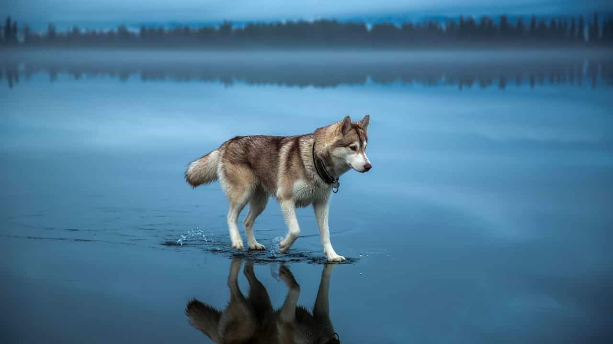

Husky sở hữu một thân hình thuôn dài, to khỏe và rất săn chắc. Chiều cao trung bình từ
53 đến 58 cm và cân nặng từ 16 đến 30 kg (thường những chú “Ngáo” giống đực sẽ có thân hình nhỉnh hơn những con
cái). Loài chó này có một bộ lông dày và có 2 lớp giữ ấm
Husky sở hữu một đôi mắt hình quả hạnh nhân, hơi xếch lên về phía đuôi mắt toát lên vẻ lạnh lùng, đầy hoang dã.
Tuy nhiên, chúng lại có tính cách khá hiền lành, thân thiện và dễ thương. “Ngáo” không có xu hướng sủa, nhưng
chúng rất hay hú và đó là cách giao tiếp của chúng với xung quanh. Tuổi đời của giống chó này trung bình trong
khoảng từ 12 đến 15 năm.
>> Cẩm nang chăm sóc CHÓ
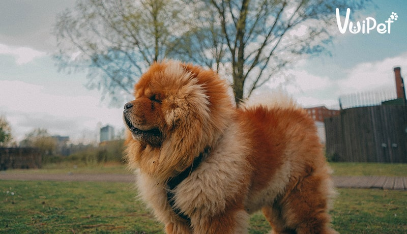
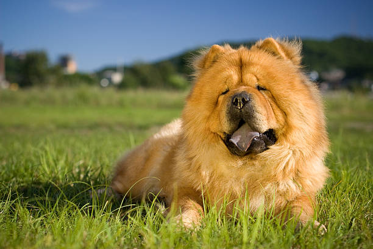
Chó Chow Chow hay còn được gọi là Chow, chắc hẳn là một cái tên khá mới lạ ở Việt Nam
nhưng đang dần được nhiều người yêu chó biết đến và yêu thích bởi vẻ dễ thương cùng tính cách trung thành, biết
nghe lời chủ của chúng.
Có nguồn gốc từ Tây tạng, chó Chow thường dùng để kéo xe, săn bắt chồn, sói,... Vì vậy bản năng của giống chó
này vẫn là bản năng hoang dã của loài chó săn nên đôi khi chúng sẽ trở nên rất ương ngạnh, hung dữ thất thường
và còn hay bắt nạt thú cưng khác trong nhà.
Chow Chow rất thông minh, dễ thương và biết nghe lời chủ. Chúng rất trung thành với chủ nhân. Tuy nhiên, gia chủ
cần phải huấn luyện Chow Chow ngay từ nhỏ để kiểm soát tính tình của chúng. Chow Chow đặc biệt hung dữ với người
lạ và sẵn sàng tấn công người lạ bất cứ lúc nào.
>> Cẩm nang chăm sóc CHÓ


Chó Akita Inu (hay còn gọi là chó Akita) là một giống chó quý có nguồn gốc từ Nhật Bản.
Chúng được coi là giống chó chính thức và là Quốc khuyển của quốc gia này. Chó Akita có thân hình to và khỏe.
Chúng có bản tính mạnh mẽ, độc lập và tính thống trị, bảo vệ lãnh thổ cao. Đối với gia chủ của mình, chúng rất
thân thiện và trung thành. Tuy nhiên với người lạ, chúng trở nên hung dữ đối với bất kỳ ai xâm nhập vào lãnh thổ
của chúng. Do đó, chúng được nuôi trong nhà để canh gác và gìn giữ nhà.
Tuy nhiên đây là một giống chó nguy hiểm nếu như không được dạy dỗ đúng cách.
Giống chó này nổi tiếng sống tình cảm, chúng rất thân thiện và trung thành với chủ nhân của mình. Câu chuyện về
chú chó Hachiko - một loài chó thuộc giống Akita, là một minh chứng sống đề cao lòng trung thành với người chủ
nổi tiếng khắp thế giới.
>> Cẩm nang chăm sóc CHÓ
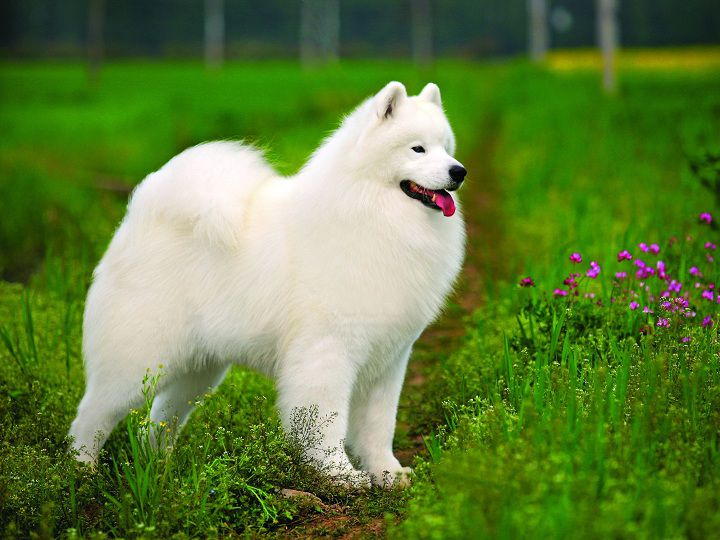

Chó Samoyed còn được gọi là chó Sam hoặc là Chó Tuyết Trắng. Chúng còn được ví như là
“Nàng Bạch Tuyết của rừng Taiga” vì chúng sở hữu bộ lông trắng như tuyết, mềm mượt. Giống chó này đã chinh phục
trái tim của nhiều bởi ngoại hình dễ thương, đáng yêu của mình.
Chó Sam còn được ưa chuộng làm vật nuôi trong nhà bởi chúng là loài chó cực kỳ trung thành, suốt đời chúng chỉ
tôn thờ duy nhất một người chủ. bên cạnh đó, chúng được đánh giá là có khả năng giữ nhà tốt, vì khi thấy có dấu
hiệu của người lạ, chúng rất tinh ý nhận ra và báo động cho gia chủ của mình biết.
Đặc điểm nổi bật của “Nàng Bạch Tuyết của rừng Taiga” là bộ lông trắng muốt, có khả năng tự làm trắng mà không
cần phải tắm rửa. Thế nhưng, lông của chó Sam rất dễ bị rụng và rụng rất nhiều, vì vậy người chủ cần chải lông
và cắt tỉa lông cho chúng thường xuyên.
>> Cẩm nang chăm sóc CHÓ


Giống chó Golden Ritriever mà chúng ta vẫn thường gọi với cái tên quen thuộc ”Golden”
có nguồn gốc từ Anh Quốc. Giống chó Golden này có ngoại hình hiền lành, đáng yêu, trông như những chú chó nhồi
bông khổng lồ, ngực rộng với và lớp lông mềm cùng một bộ hàm sắc bén. Mắt nhỏ có viền sẫm, tai to cụp xuống áp
sát mặt. Ngực rộng, chân linh động.Golden Ritriever là giống chó nhạy bén, thông minh, có khả năng đánh hơi,
phát hiện con mồi cực tốt và khả năng bơi lội siêu đẳng. Vì thế giống chó này được huấn luyện để trở thành chó
đặc nhiệm phục vụ trong quân đội.
Người nuôi Golden Ritriever cần quan tâm chúng mỗi ngày, dắt chúng đi dạo và dạy chúng những bài học nho nhỏ.
Giống chó này rất dễ bị béo phì nếu như không được vận động thường xuyên. Ngoài ra, nếu bị cách ly với chủ trong
một thời gian dài, chúng sẽ trở nên khó dạy.
>> Cẩm nang chăm sóc CHÓ
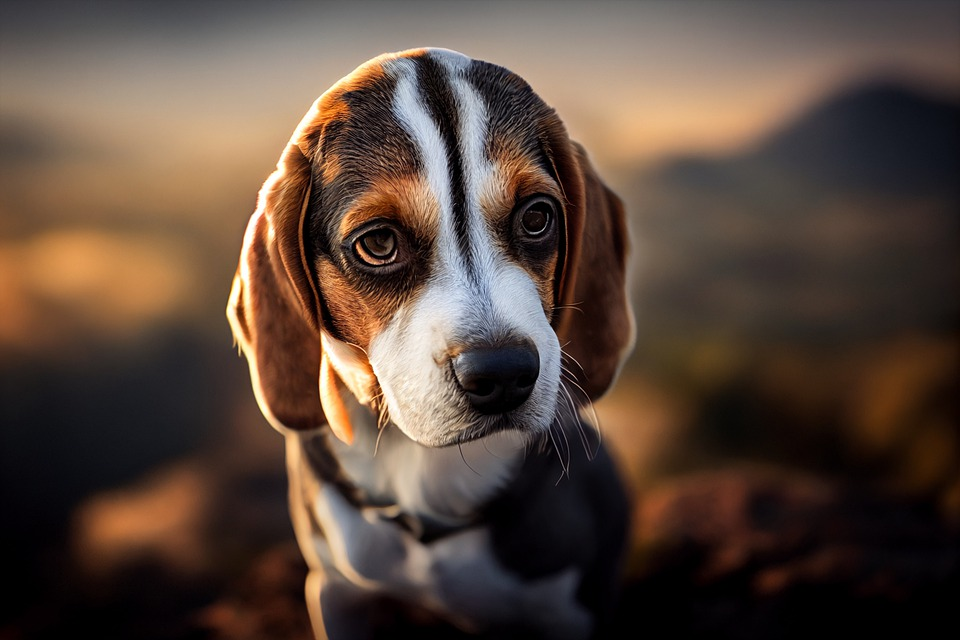
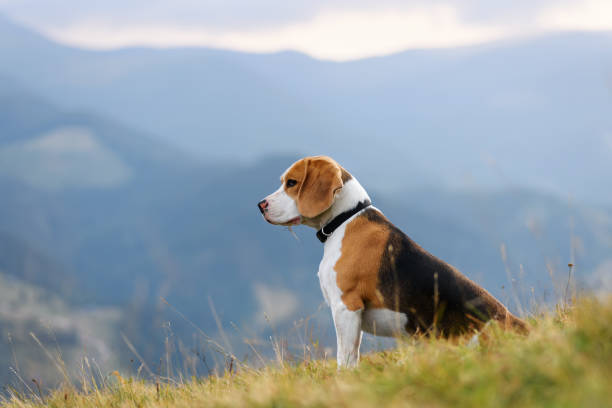
Chó Beagle hay còn gọi là chó săn thỏ là loài chó rất thân thiện, ôn hòa với con người
và các con vật khác.
Vì có nguồn gốc từ loài chó săn, nên chó Beagle có chiếc mũi rất nhạy cảm, thích khám phá nên thường tìm tòi và
đi theo những gì chúng đánh hơi được. Vì thế nên chúng còn được dùng để truy bắt tội phạm, truy tìm ma túy.
Chó Beagle đặc biệt không thích ở một mình vì thế chúng thường hay đi dạo chơi lung tung nếu như ở một mình. Vì
vậy, để đảm bảo an toàn cho chú chó, các gia chủ nên xích chúng lại cẩn thận khi không có người trông chừng nhé.
>> Cẩm nang chăm sóc CHÓ
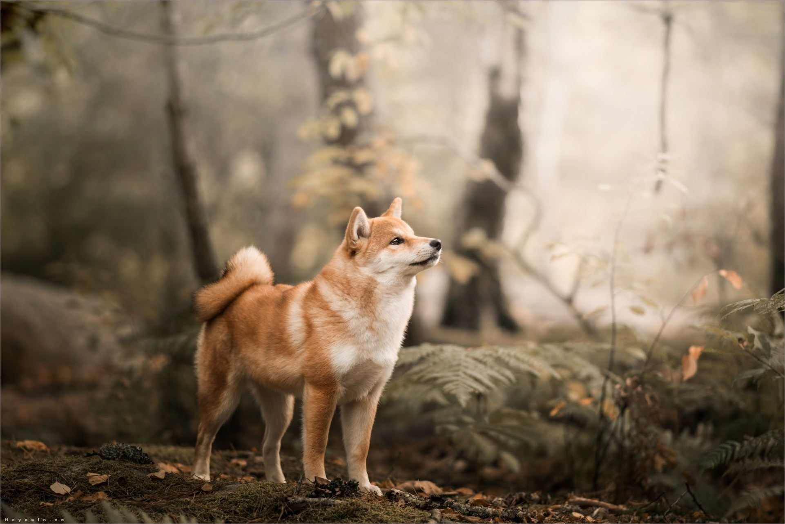
❮
❯
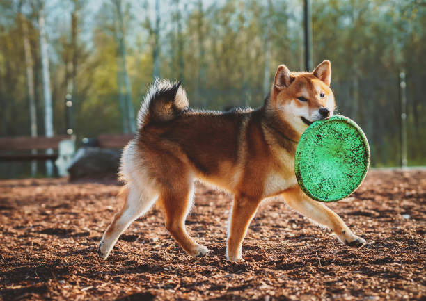
Chó Shiba Inu có ngoại hình trông khá giống với Akita Inu. Nhưng chó Shiba có thân hình
nhỏ nhắn hơn, có thể ôm trọn trong lòng, còn với Akita thì có ngoại hình khá cao và lớn khi trưởng thành.
Loài chó này, rất thông minh và táo bạo, đôi khi hơi hung hăng nhưng lại rất thân thiện, trung thành và tình cảm
với chủ.
Điểm đặc biệt ở loài chó này là chúng rất thích sạch sẽ và biết tự giữ mình luôn sạch sẽ. Do đó, các bạn không
cần tắm nhiều cho Shiba như những giống chó khác. Shiba Inu đặc biệt rất thích bơi lội và nô đùa dưới nước nữa.
Lông của Shiba Inu rụng rất nhiều, đặc biệt thường rụng là mùa hè. Vì thế, gia chủ cần có kiến thức tốt khi chăm
sóc giống chó này và đặc biệt nên quan tâm đến vấn đề sức khỏe của chúng, xem đâu là cách chăm sóc tốt nhất.
>> Cẩm nang chăm sóc CHÓ